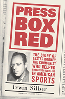

<body bgcolor="#FFFFFF" text="#000000" link="#0000FF" vlink="#CC0000" alink="#CC0000"><center><hr width="350" size="1" align="center" noshade>How a journalist gave the <I>Daily Worker</I> its first sports column, and broke the color barrier in sports in the process<hr width="350" size="1" align="center" noshade><p><a href="https://cdcshoppingcart.uchicago.edu/Cart/ChicagoBook.aspx?ISBN=9781566399739&&PRESS=temple" target="_top">Buy this book!</a> | <a href="https://cdcshoppingcart.uchicago.edu/Cart/Cart.aspx?PRESS=temple" target="_top">View Cart</a> | <a href="https://cdcshoppingcart.uchicago.edu/Cart/Cart.aspx?PRESS=temple" target="_top">Check Out</a></p><p></p></center><!--none//--><h1>Press Box Red</h1>
<H2>The Story of Lester Rodney, the Communist Who Helped Break the Color Line in American Sports</H2>
<H2><!-- Foreword by Jules Tygiel --></H2>
<h3>Irwin Silber, foreword by Jules Tygiel</h3>
<P>cloth 1-56639-973-4 $74.50, Aug 03, <FONT COLOR=#990033>Available</FONT>
<br>paper 1-56639-974-2 $27.95, Aug 03, <FONT COLOR=#990033>Available</FONT>
<BR> 256 pp
6x9
11&nbsp;figures 16&nbsp;halftones
</P><BLOCKQUOTE><I>"This lively book is a welcome addition to the saga of 20th-Century American sports and sportswriting, especially in its telling of the little-known tale of Lester Rodney's role in the integration of baseball."</I>
<br>&#151<b>Robert Lipsyte</b><I></I></BLOCKQUOTE>
<p>Long before Branch Rickey signed Jackie Robinson to a Brooklyn Dodger contract in 1945, Lester Rodney, the newly hired and first sports editor of the <I>Communist Daily Worker</I>, launched the campaign that proved decisive in eventually breaking baseball's color line.
<p>But in the hostile anti-Communist climate of those years and for many years after, Rodney's story remained largely unknown. It therefore came as a surprise to many when Arnold Rampersad, in his authoritative 1997 biography of Jackie Robinson, wrote: "In the campaign to end Jim Crow in baseball, the most vigorous efforts came from the Communist press, most notably from Lester Rodney." Now <I>Press Box Red</I> tells the story of that remarkable 11-year campaign and of Rodney's unique career covering sports for the <I>Daily Worker</I> until he left the Communist Party in 1958.
<p><I>Press Box Red</I> is packed with first-hand accounts of Rodney's challenges to the high muck-a-mucks of professional and collegiate sports, and contains frank and frequently humorous encounters with owners, managers, and coaches like Branch Rickey, Larry MacPhail, Bill Veeck, Leo Durocher, Casey Stengel, Nat Holman, Clair Bee and numerous athletes including Robinson, Roy Campanella, Joe DiMaggio, Satchel Paige, Peewee Reese, Joe Louis, Henry Armstrong, and many others. It's a story every fan will love.
<BR>&nbsp;<h2>Excerpt</h2><P>Excerpt available at <a href="http://www.temple.edu/tempress">www.temple.edu/tempress</a></p>
<BR>&nbsp;<h2>Reviews</h2>
<p><I>"Lester Rodney was a Communist. Whether because of that or in spite of that, he was also one of the most independent and courageous sportswriters of his day. </I>Press Box Red<I> is a timely, much-needed reminder of the pivotal role he played in integrating baseball, and, therefore, in the history of this country."</I>
<br>&#151<b>David Margolick</b>
<p><i>"Anyone interested in the New York sports scene in the era of Joe Louis and Joe DiMaggio is likely to derive much pleasure from these pages."</i>
<br>&#151<b><i>Choice</i></b>
<p><i>"While the book is first and foremost a history of Rodney's efforts, parts of this book are of particular interest to revolutionary socialists...</i>Press Box Red<i> sheds light on this hidden history."</i>
<br>&#151<b><i>The Socialist Worker</i></b>
<p><i>"This book is required reading for anyone who's interested in sports and politics and how the two can intersect."</i>
<br>&#151<b><i>The International Socialist Review</i></b>
<p><i>"Besides its engaging account of an engaging man, the book offers a look into one of the odd corners of baseball history&#151the not-so-remote byway where baseball crossed paths with communism."</i>
<br>&#151<b><i>Elysian Fields Quarterly</i></b>
<p><i>"[I]mportant...a work that should be read and reread..."</i>
<br>&#151<b><i>Nine</i></b>
<p><i>"[Rodney and Silber] dispense wisdom coupled with wit, salient information paired with keen insight. In the process, they confer a human face on an ideological construct: American communism.... Rodney's odyssey from a Republican household to CP affiliation to disaffected radical makes for fascinating reading, which the book captures, to borrow a Gershwin phrase, in fascinatin' rhythm."</i>
<br>&#151<b><i>American Communist History</i></b>
<p><i>"Author Irwin Silber devotes half the book to situating Rodney's efforts within the larger scene and lets his subject talk for the rest. The result is a pleasure to read."</i>
<br>&#151<b><i>Z Magazine Online</i></b>
<p><i>"This book is a crisp reminder that the golden age of baseball and pro-sports in America in general was not nearly as simple as many would like to believe. Perhaps, more importantly, this book is a testimony that sport has always been a matter of deep social significance and that the never-ending battle for social justice can be successfully waged from the most unexpected of spaces."</i>
<br>&#151<b><i>Left History</i></b>
<p><i>"This ebullient account is less a formal biography than a memoir compiled from extended interviews, and less valuable for its politics than for its incidents and insights about the midcentury golden era of sport."</i>
<br>&#151<b><i>Columbia Journalism Review</i></b>
<p><i>"Just when we thought Jules Tygiel's </i>Baseball's Great Experiment<i> and Arnold Rampersad's </i>Jackie Robinson<i> had told us everything we needed to know about the integration of baseball, out of left field and out of the blue comes the story of Lester Rodney. Oops&#151;correct field, wrong color. Rodney was and is an unapologetic communitst (though he quit the party in 1958, when he finally accepted the evidence of Stalin's purges). Up to now, Rodney has been no more than a footnote in books about Robinson. </i>Press Box Red<i>, written with Rodeny's cooperation by Irwin Silber, a veteran left-wing author and former editor of the folk magazine </i>Sing Out!<i>, fills a notable gap in American sports history."</i>
<br>&#151<b><i>The Los Angeles Times Sunday Book Review</i></b>
<p><i>"Lester Rodney's story has remained relatively unknown since [1947], but in </i>Press Box Red<i>, Silber recounts this 11-year period as a highlight in Rodney's sports journalism career."</I>
<br>&#151<b><i><a href="http://www.findarticles.com/p/articles/mi_m0DXK/is_4_20/ai_100543591" target="new">Black Issues in Higher Education</a></i></b>
<BR>&nbsp;<P><p>Village Voice <a href="http://www.villagevoice.com/issues/0342/barra.php" target="new">interview</a> with Lester Rodney.</P><BR>&nbsp;<br>
<h2>Contents</h2><P>
<p>Foreword &#150 Jules Tygiel
<br>Acknowledgments
<br>1. The <i>Daily Worker</i> Starts a Sports Section
<br>2. Growing Up in Brooklyn
<br>3. A Communist in the Press Box?
<br>4. "Jim Crow Must Go!" (Part 1): The <i>Daily Worker</i>'s Campaign to Break the Color Line in Organized Baseball
<br>5. "Jim Crow Must Go!" (Part 2): And the Walls Came (Slowly) Tumbling Down
<br>6. The Impact of Baseball's Integration
<br>7. The Ballplayers and the Communist
<br>8. Boxing: The Brutal "Sport" and the Class Angle
<br>9. Hoop Dreams&#151and Scandals
<br>Postscript
<br>Bibliography
<br>Index
</P><BR>&nbsp;<H2>About the Author(s)</H2>
<P><b>Irwin Silber</b> is a self-employed writer who lives in the Bay Area of northern California. He is the author or editor of eight previous books, including <I>Socialism: What Went Wrong</I> and <i>The Vietnam Song Book</i> (with Barbara Dane).</P>
<BR><H2>Subject Categories</H2>
<p><A HREF="/tempress/sports.html" TARGET="_top">Sports</a>
<BR><A HREF="/tempress/african.html" TARGET="_top">African American Studies</a>
<BR><A HREF="/tempress/american.html" TARGET="_top">American Studies</a>
</p>
<p align="center"><a href="https://cdcshoppingcart.uchicago.edu/Cart/ChicagoBook.aspx?ISBN=9781566399739&&PRESS=temple" target="_top">Buy this book!</a> | <a href="https://cdcshoppingcart.uchicago.edu/Cart/Cart.aspx?PRESS=temple" target="_top">View Cart</a> | <a href="https://cdcshoppingcart.uchicago.edu/Cart/Cart.aspx?PRESS=temple" target="_top">Check Out</a></p><p><font face="Arial" size="1"><a href="copyright.html" onMouseOver="window.status='Web Copyright Policy';return true;" onMouseOut="window.status=''" title="Web Copyright Policy">&copy;</a> 2015 <a href="http://www.temple.edu" target="new" onMouseOver="window.status='Link to Temple University home page';return true;" onMouseOut="window.status=''" title="Link to Temple University home page">Temple University</a>. All Rights Reserved. http://www.temple.edu/tempress/titles/1648_reg.html</font></p>